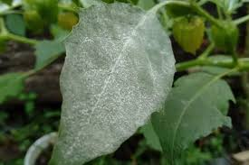
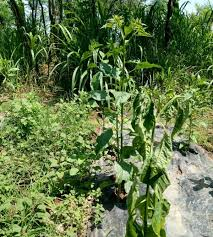
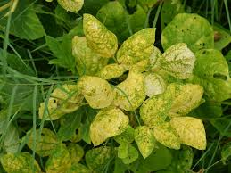
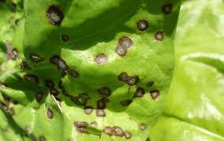

Daftar Penyakit yang Menyerang Tanaman Bayam

Penyakit Busuk Akar (Fusarium spp.)
Gejala: Akar membusuk, tanaman layu.
Penanganan:
- Menghindari penanaman di lahan yang terinfeksi.
- Menggunakan varietas tahan dan memperbaiki drainase tanah.

Penyakit Embun Tepung (Erysiphe spp.)
Gejala: Muncul bercak putih di permukaan daun.
Penanganan:
- Menggunakan fungisida yang sesuai.
- Meningkatkan sirkulasi udara di antara tanaman dengan penjarangan.

Penyakit Layu Bakteri (Ralstonia solanacearum)
Gejala: Tanaman layu mendadak dan dapat mati.
Penanganan:
- Menghindari penyiraman berlebihan.
- Menggunakan benih yang sehat dan tahan penyakit.

Penyakit Virus (seperti Virus Kuning)
Gejala: Daun menguning dan pertumbuhan terhambat.
Penanganan:
- Menghilangkan tanaman yang terinfeksi.
- Menggunakan varietas yang tahan terhadap virus.

Penyakit Bercak Daun (Cercospora spp.)
Gejala: Daun berwarna kuning dengan bintik-bintik kecil.
Penanganan:
- Menggunakan fungisida yang sesuai.
- Menghilangkan daun yang terinfeksi.